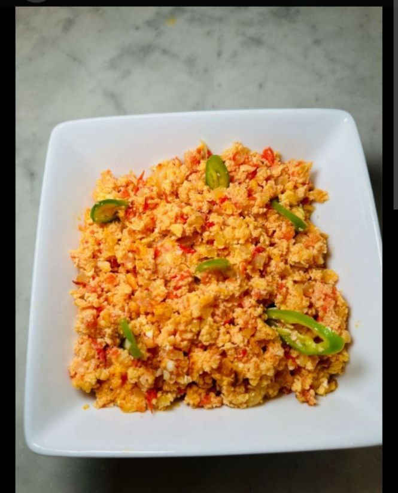
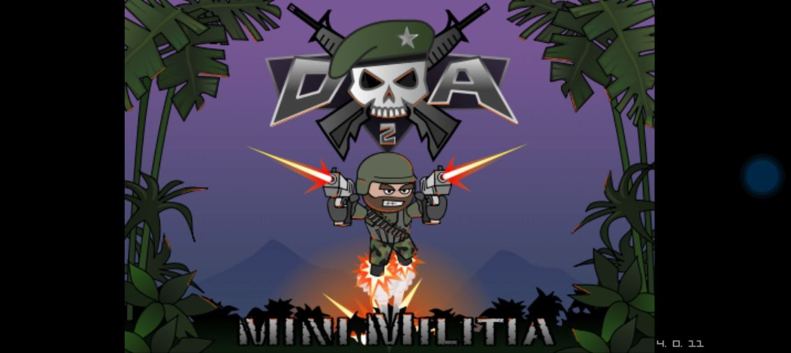

My name is Akililu ABATE I was born in: 13/09/1996 in haddiyya zone analemo worad to my father: Abate and my mother: mebaza.
I studied from grade 1-8 at wasela primary school.
And from grade 9-12 fonk secondary and priparatory school, I won't separated from my family studied grade 1 up to 12 , I was separated from family come to woliyta sodo University, which is the seat of district.
INTEREST
my favorite food:egg with firir

my interests game:mini militia

my interest music:Hile Root
my interest departemant:cs

Goole
As the computer scince student and Computer Science is the scientific and practical approach to computation and its applications.
is the study of automating algorithmic processes. Now-a-days innovation in computer science is making an impact and changing the world student :many problem in ethiopa b/c by using difrent tecnology to solve that problem this websit is the frist use to solve a problem